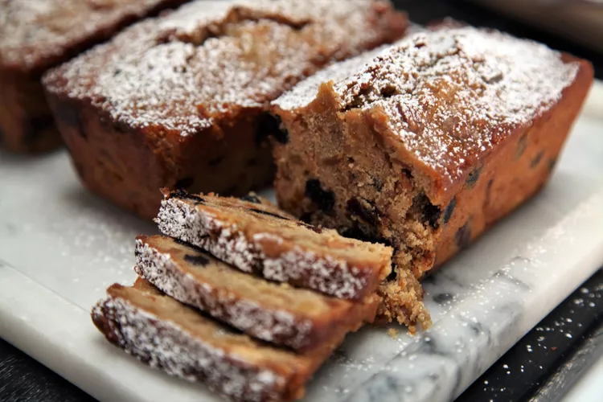

HOME
Smart Cookie Fruitcake

Description
Using naturally sweetened dried fruits and a curing time of 6 to 7 weeks ensures a beautifully flavored fruitcake that's even tastier than it is infamous. This recipe makes 4 mini loaves for easy gift-giving!
Ingredients
- ½ cup dates, pitted and chopped
- ½ cup dried cherries
- ½ cup golden raisins
- ½ cup dried blueberries
- ½ cup dried apricots, chopped
- ¼ cup crystallized ginger, chopped
- ½ cup spiced rum
- 1 cup orange juice
- ¾ cup unsalted butter
- ½ cup white sugar
- 1 orange, zested
- 1 lemon, zested
- 1 cinnamon stick
- 1¾ cups all-purpose flour
- 1½ teaspoons salt
- 1 teaspoon baking soda
- 1 teaspoon baking powder
- ¼ teaspoon ground cinnamon
- ¼ teaspoon ground allspice
- ¼ teaspoon ground nutmeg
- baking spray
- 2 eggs, lightly beaten
- ¾ cup unsalted mixed nuts, chopped
For the Top:
- 1 fluid ounce spiced rum, or to taste
- tablespoon confectioners' sugar, or to taste
Steps
- Combine dates, cherries, raisins, blueberries, apricots, and ginger in a bowl. Pour spiced rum and chai on top and let soak 8 hours to overnight.
- Mix soaked fruit with orange juice, zest, butter, sugar, zest, and cinnamon stick. Bring to a simmer and cook until butter has melted and sugar has dissolved, about 10 minutes. Remove from heat and let cool for 30 minutes.
- In the meantime, combine flour, salt, baking soda, baking powder, cinnamon, allspice, and nutmeg in a medium bowl.
- Preheat the oven to 325 degrees F (165 degrees C). Spray 4 mini loaf pans with baking spray.
- Remove cinnamon stick from the soaked fruit; stir in the flour mixture until combined. Add eggs, mixing to combine, and fold in mixed nuts. Divide batter between the prepared loaf pans.
- Bake in the preheated oven until a toothpick inserted into the center of a cake comes out clean, about 1 hour.
- Remove from the oven and cool on a wire rack for 10 minutes. Run a knife along the edges of each loaf and turn out of the pan. Brush warm cakes with more rum and let cool completely, at least 1 hour.
- Place cooled cakes in airtight containers and store in the refrigerator for 6 to 7 weeks. Dust with powdered sugar before serving.